Bluebirds WordPress Theme Documentation
Thank you for choosing Bluebirds Theme.
Installing the theme
- Download and unzip the theme package into the worpdress themes folder or Go to Admin Panel->Appearance->Themes->Add New-> Upload Theme 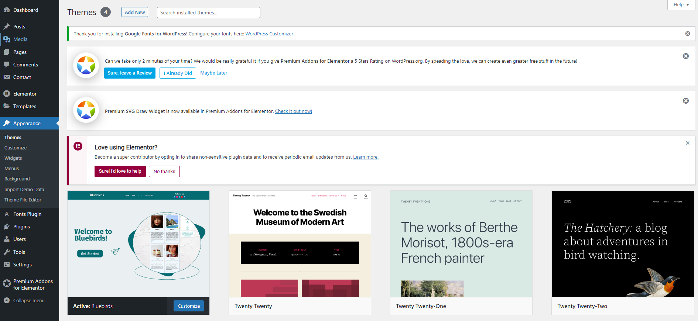
- Go to Admin Panel->Appearance->Themes And Activate The Bluebirds WordPress Theme .
Now Enjoy the theme and create your own Blog Site.
Install and activate required plugins
- After activating theme you will be asked to install required plugins 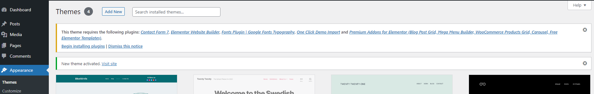
- Press begin installing plugins then check all required plugins, select install and press apply. 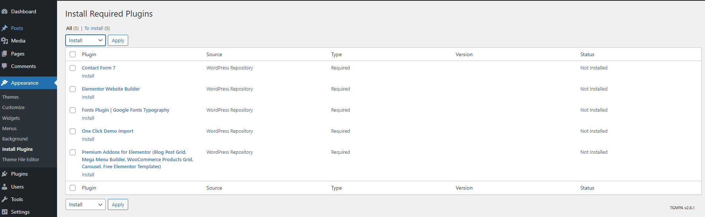
- After installation complites Go to Appearance->Install plugins check all, select activate and press apply 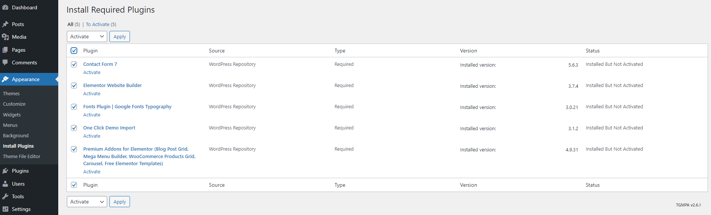
Remove default widgets
- Before importing demo content make sure there is no default widgets.
- Go to Admin->Appearance->Widgets. 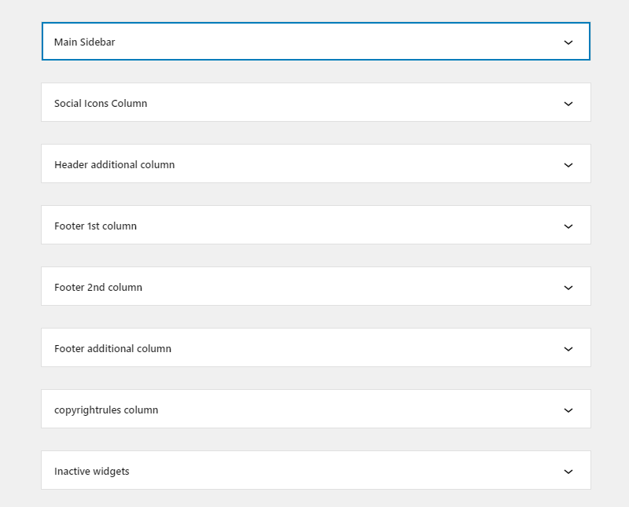
- If there is some inside these sections, remove.
Import demo content
- To start importing demo content:
- Go to Admin->Appearance->Import Demo Data. 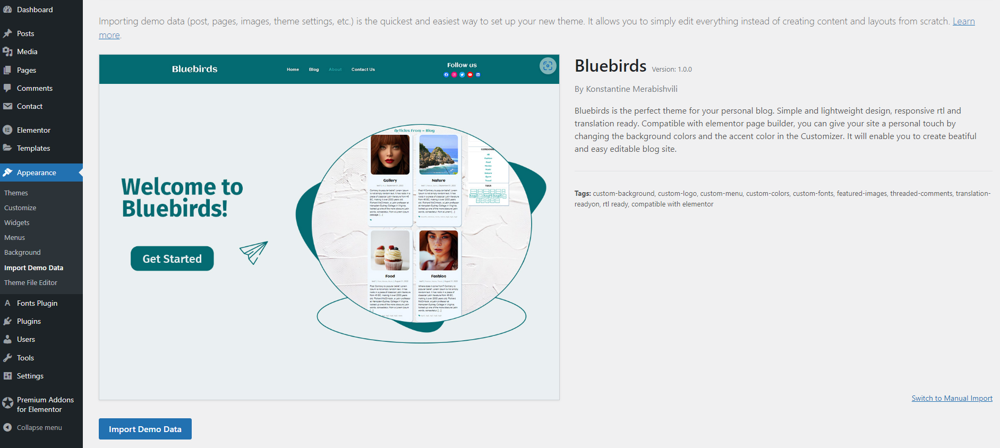
- Press Import Demo Data button and content will be installed automatically
Widgets
Go To->Admin->Appearance->Widgets or Appearance->customize->widgets- Widgets(Admin View)
- Widgets(Customize View)
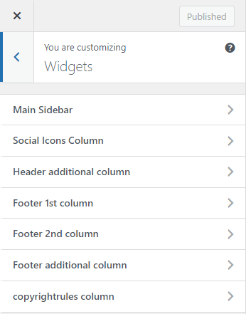 - You can add, remove, change layout, edit and customize your widgets.
- In Main Sidebar you can add, remove, edit and customize widgets for sidebar. After importing demo data there is active 3 widgets: search, categories and tags cloud.
- Main Sidebar(Admin View)
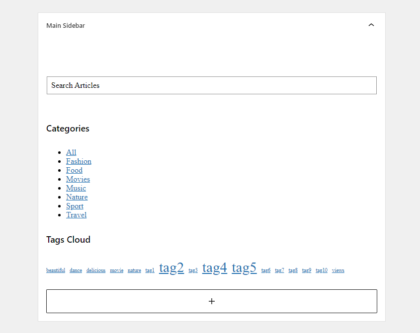 - Main Sidebar(Front View)
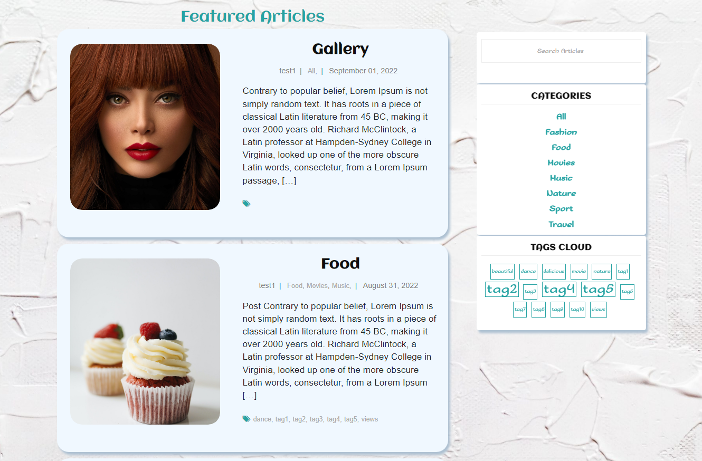 - In Social icons column you can add, remove, edit and customize your social links to the different social network icons. This column apppears in the header and footer
- Social icons column(Admin View)
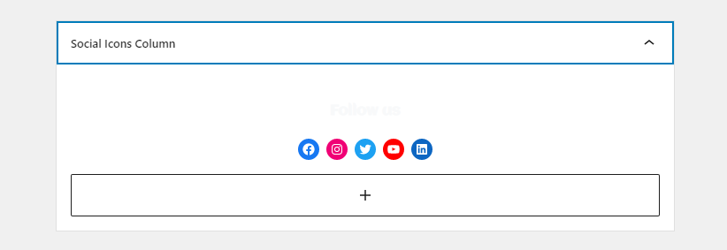 - Social icons column(Front View)
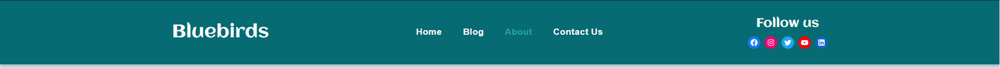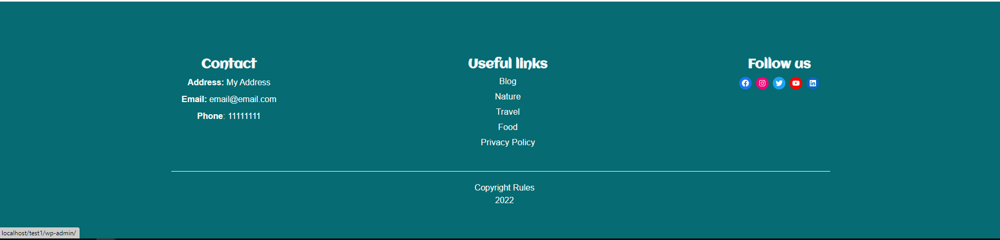 - For Footer you can use footer 1st column(for contact block), footer 2nd column(for menu block) and copyrightrules column(for copyright block text)
- Footer widgets(Admin View)
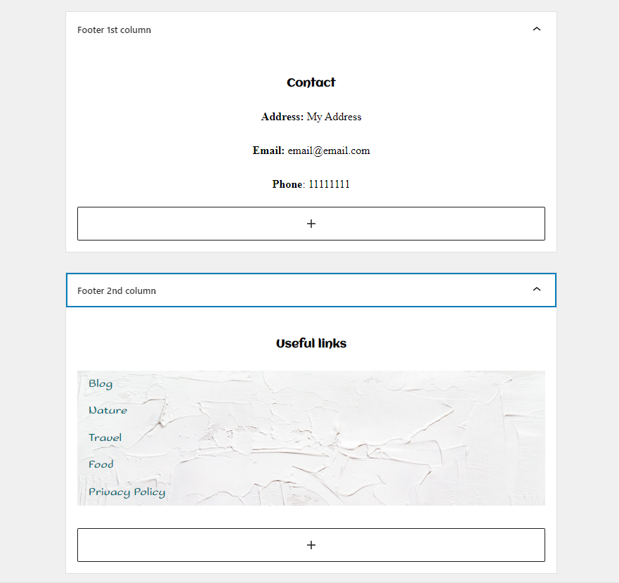 - Footer widgets(Front View)
- Bluebirds theme supports Header and Footer additional column widgets which you can use for your needs. In front they appear before social icons column.
Customizing the theme
- To start customizing bluebirds theme, Go To Appearance->customize.
- In Fonts Plugin section you can find different font options for diferent types of text format.
- In Header Settings section you can find different options for header background, menu, dropdown and hamburger menu.
- In Footer Settings section you can find different options for footer background and menu.
- In Site Identity section you can upload custom logo and site icon, also set site title and tagline.
- In Colors section you can change site background, tagline, slider and blog posts color.
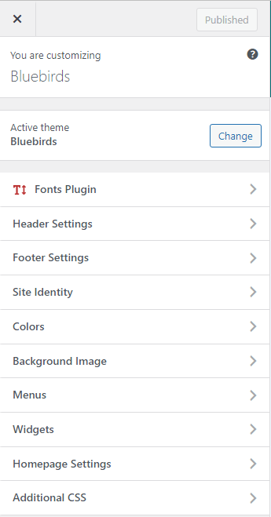
Header
- Header consists 3 columns. 1st column for site logo and tagline, 2nd for menu 3rd for social icons.
- You can customize header as shown in Customize the theme and Custom Widgets.
Home Page Template
- Home Page Contains Slider Section. 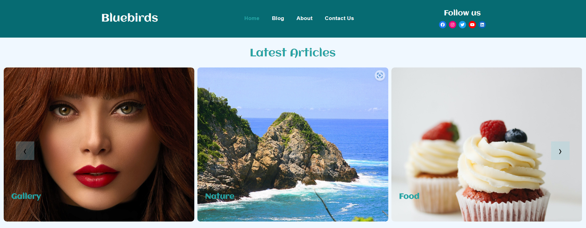
- Slider automatically shows 12 latest articles.
- Featured Articles section with sticky sidebar. 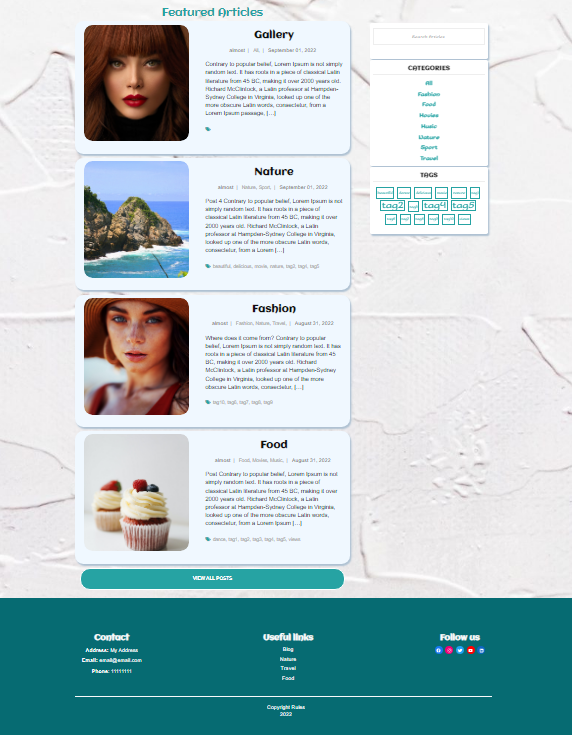
- In Featured Articles section is displayed 10 randomly choosen articles.
- This is custom tempalate and after import demo data is set to home page.
- To use this template select Home page - template. 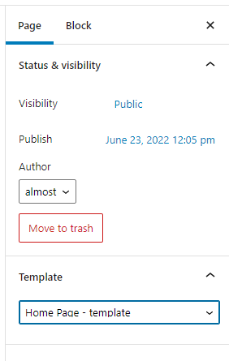
Blog Template
- Blog tamplate displays all blog articles with sticky sidebar
- Theme supports posts pagination
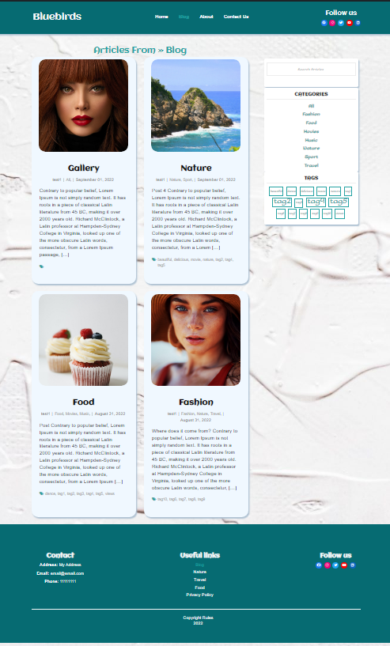
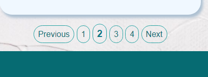
About Template
- About Template is built by Elementor page builder.
- By default contains 3 section:
- Banner
- 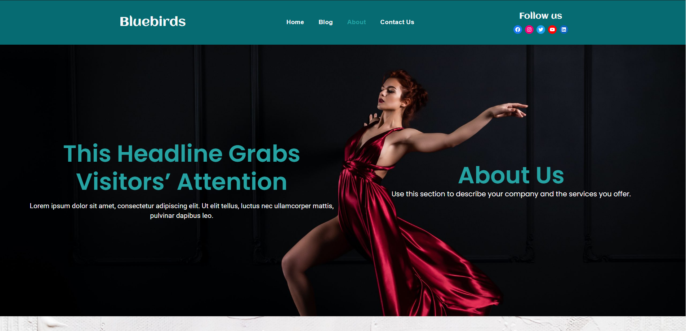
- Gallery
- 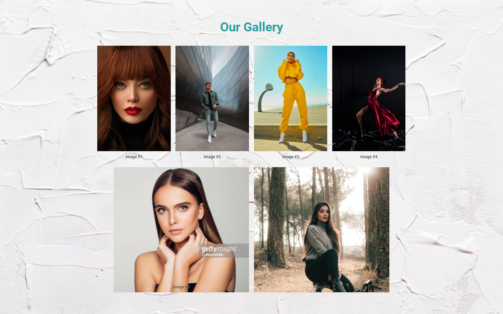
- Slogan
- 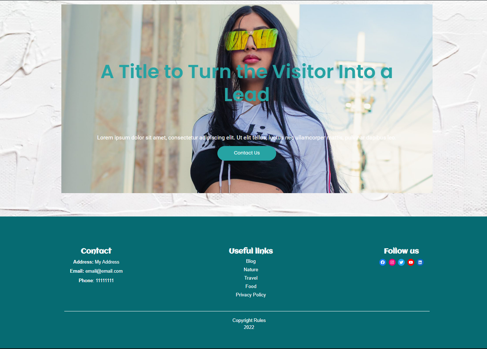
- You can change content and customize page with Elementor.
Contact Us Template
- Contact Us Template is built by Elementor page builder.
- By default contains: Map, Contact Form with Contact Info and Frequently Asked Questions sections.
- 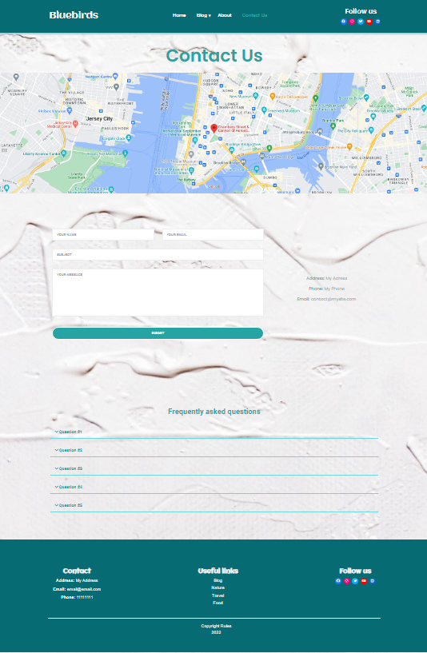
- Contact form is built by Contact Form 7 plugin.
- 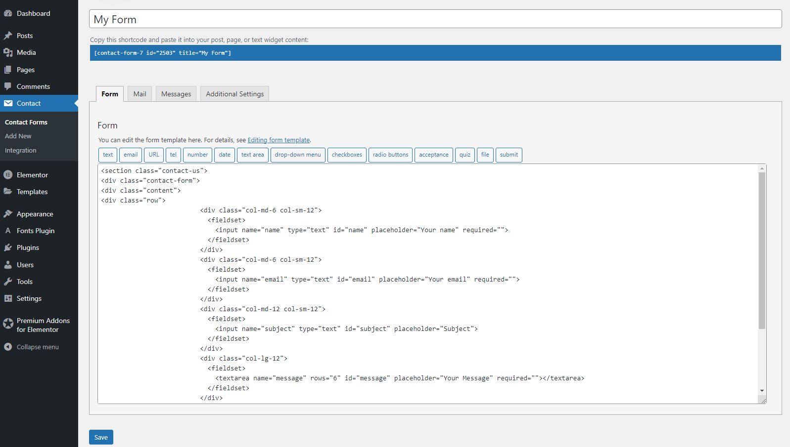
- You can change content and customize page with Elementor.